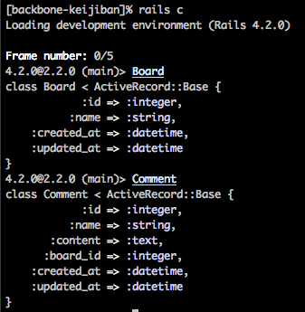
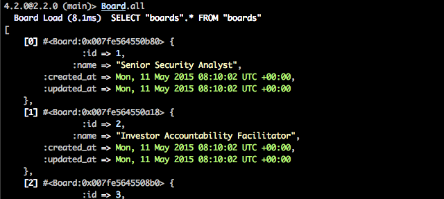
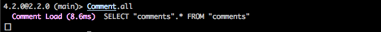

Step11: rails console でモデルを確認
$ rails console
> Board
> Comment

Step12: boardのseedデータを確認する
$ rails console <= 以下は、起動したままで続ける
> Board.all
seedデータが10件入っているのが確認できると思います。

Step13: commentテーブルは空であること確認
commentテーブルの中身は空です。

.index .nav-tabs > li > a{
border: 1px solid #ddd;
border-bottom-color: transparent;
padding: 8px 15px;
border-radius: 6px 6px 0px 0px !important;
height: 100%;
font-size: 16px;
font-weight: 600;
}
.index .nav-tabs > li:first-child > a{
margin-right: 6px;
}
.index .nav-tabs > li:nth-child(2) > a{
margin-left: 6px;
margin-right: 0px;
}
.index .nav > li > a:hover, .index .nav > li > a:focus{
background-color: #f5f5f5;
border-bottom: 1px solid #ddd;
}
.index .nav > li.active > a, .index .nav > li.active > a:focus{
border: 1px solid #ddd;
border-bottom-color: transparent;
color: #555;
background-color: #fff;
}
.index .nav > li.active > a:hover{
border: 1px solid #ddd;
border-bottom-color: transparent;
color: #555;
background-color: #fff;
}